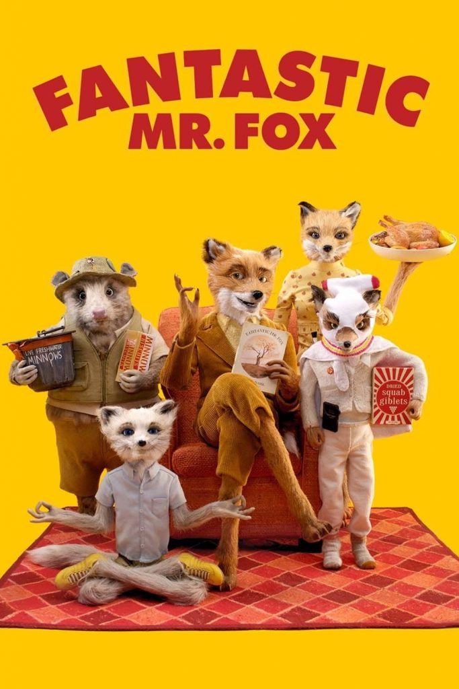
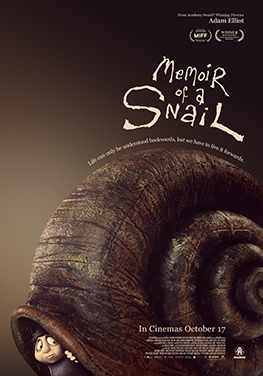

Close
It follows two teenage boys whose close friendship is thrown into disarray when their schoolmates notice their intimacy, causing a rift between them.

The Prestige
It follows Theodore Twombly (Joaquin Phoenix), a man who develops a relationship with Samantha (Scarlett Johansson), an artificially intelligent operating device.

Fantastic Mr. Fox
An urbane fox cannot resist returning to his farm raiding ways and then must help his community survive the farmers' retaliation.

Memoir of a Snail
A melancholic misfit learns how to find confidence within herself amid the clutter of misfortunes and everyday life.